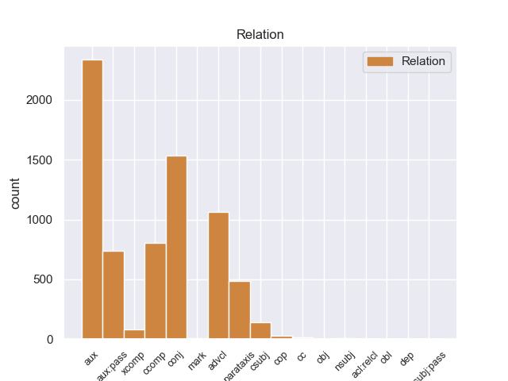
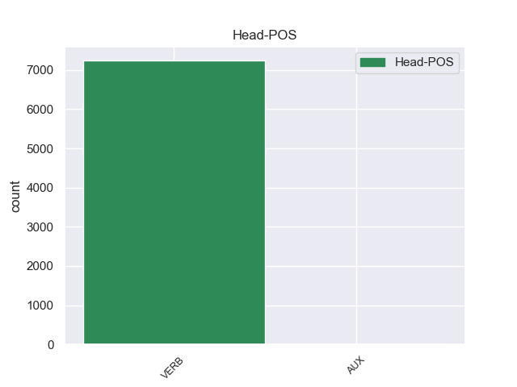
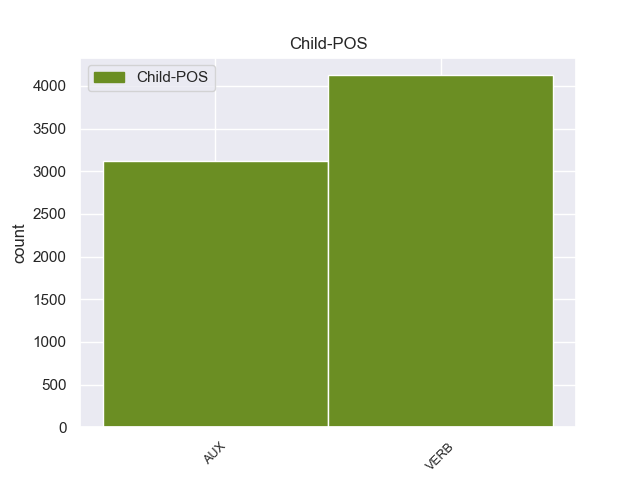

Distribution of features within this leaf



Agreement Rules sorted by frequency.
- When the dependent token is the conjunct(conj) of the head token,
1 Situada _ _ _ _ 0 _ _ _
2 en _ _ _ _ 0 _ _ _
3 La _ _ _ _ 0 _ _ _
4 Mancha _ _ _ _ 0 _ _ _
5 toledana _ _ _ _ 0 _ _ _
6 en _ _ _ _ 0 _ _ _
7 un _ _ _ _ 0 _ _ _
8 enclave _ _ _ _ 0 _ _ _
9 estratégico _ _ _ _ 0 _ _ _
10 para _ _ _ _ 0 _ _ _
11 las _ _ _ _ 0 _ _ _
12 comunicaciones _ _ _ _ 0 _ _ _
13 ferroviarias _ _ _ _ 0 _ _ _
14 a _ _ _ _ 0 _ _ _
15 nivel _ _ _ _ 0 _ _ _
16 nacional _ _ _ _ 0 _ _ _
17 , _ _ _ _ 0 _ _ _
18 a _ _ _ _ 0 _ _ _
19 el _ _ _ _ 0 _ _ _
20 sur _ _ _ _ 0 _ _ _
21 de _ _ _ _ 0 _ _ _
22 Madrid _ _ _ _ 0 _ _ _
23 y _ _ _ _ 0 _ _ _
24 a _ _ _ _ 0 _ _ _
25 el _ _ _ _ 0 _ _ _
26 sudeste _ _ _ _ 0 _ _ _
27 de _ _ _ _ 0 _ _ _
28 Toledo _ _ _ _ 0 _ _ _
29 , _ _ _ _ 0 _ _ _
30 se _ _ _ _ 0 _ _ _
31 encuentra encontrar VERB _ Mood=Ind|Number=Sing|Person=3|Tense=Pres|VerbForm=Fin 0 _ _ _
32 en _ _ _ _ 0 _ _ _
33 el _ _ _ _ 0 _ _ _
34 Valle _ _ _ _ 0 _ _ _
35 de _ _ _ _ 0 _ _ _
36 el _ _ _ _ 0 _ _ _
37 rio _ _ _ _ 0 _ _ _
38 riánsares _ _ _ _ 0 _ _ _
39 a _ _ _ _ 0 _ _ _
40 los _ _ _ _ 0 _ _ _
41 pies _ _ _ _ 0 _ _ _
42 de _ _ _ _ 0 _ _ _
43 las _ _ _ _ 0 _ _ _
44 sierras _ _ _ _ 0 _ _ _
45 de _ _ _ _ 0 _ _ _
46 El _ _ _ _ 0 _ _ _
47 Romeral _ _ _ _ 0 _ _ _
48 y _ _ _ _ 0 _ _ _
49 parte _ _ _ _ 0 _ _ _
50 de _ _ _ _ 0 _ _ _
51 el _ _ _ _ 0 _ _ _
52 casco _ _ _ _ 0 _ _ _
53 urbano _ _ _ _ 0 _ _ _
54 se _ _ _ _ 0 _ _ _
55 encuentra encontrar VERB _ Mood=Ind|Number=Sing|Person=3|Tense=Pres|VerbForm=Fin 31 conj _ _
56 en _ _ _ _ 0 _ _ _
57 el _ _ _ _ 0 _ _ _
58 fondo _ _ _ _ 0 _ _ _
59 de _ _ _ _ 0 _ _ _
60 un _ _ _ _ 0 _ _ _
61 lago _ _ _ _ 0 _ _ _
62 seco _ _ _ _ 0 _ _ _
63 de _ _ _ _ 0 _ _ _
64 el _ _ _ _ 0 _ _ _
65 que _ _ _ _ 0 _ _ _
66 forma _ _ _ _ 0 _ _ _
67 parte _ _ _ _ 0 _ _ _
68 la _ _ _ _ 0 _ _ _
69 laguna _ _ _ _ 0 _ _ _
70 Larga _ _ _ _ 0 _ _ _
71 . _ _ _ _ 0 _ _ _
1 Este _ _ _ _ 0 _ _ _
2 joven _ _ _ _ 0 _ _ _
3 extremeño _ _ _ _ 0 _ _ _
4 iniciaba _ _ _ _ 0 _ _ _
5 su _ _ _ _ 0 _ _ _
6 carrera _ _ _ _ 0 _ _ _
7 como _ _ _ _ 0 _ _ _
8 compositor _ _ _ _ 0 _ _ _
9 e _ _ _ _ 0 _ _ _
10 intérprete _ _ _ _ 0 _ _ _
11 , _ _ _ _ 0 _ _ _
12 con _ _ _ _ 0 _ _ _
13 tan _ _ _ _ 0 _ _ _
14 solo _ _ _ _ 0 _ _ _
15 10 _ _ _ _ 0 _ _ _
16 años _ _ _ _ 0 _ _ _
17 , _ _ _ _ 0 _ _ _
18 ya _ _ _ _ 0 _ _ _
19 que _ _ _ _ 0 _ _ _
20 sus _ _ _ _ 0 _ _ _
21 juguetes _ _ _ _ 0 _ _ _
22 preferidos _ _ _ _ 0 _ _ _
23 eran _ _ _ _ 0 _ _ _
24 un _ _ _ _ 0 _ _ _
25 micrófono _ _ _ _ 0 _ _ _
26 , _ _ _ _ 0 _ _ _
27 que _ _ _ _ 0 _ _ _
28 le _ _ _ _ 0 _ _ _
29 trajeron _ _ _ _ 0 _ _ _
30 los _ _ _ _ 0 _ _ _
31 reyes _ _ _ _ 0 _ _ _
32 magos _ _ _ _ 0 _ _ _
33 y _ _ _ _ 0 _ _ _
34 el _ _ _ _ 0 _ _ _
35 espejo _ _ _ _ 0 _ _ _
36 de _ _ _ _ 0 _ _ _
37 el _ _ _ _ 0 _ _ _
38 salón _ _ _ _ 0 _ _ _
39 de _ _ _ _ 0 _ _ _
40 su _ _ _ _ 0 _ _ _
41 casa _ _ _ _ 0 _ _ _
42 donde _ _ _ _ 0 _ _ _
43 se _ _ _ _ 0 _ _ _
44 imaginaba imaginar VERB _ Mood=Ind|Number=Sing|Person=3|Tense=Imp|VerbForm=Fin 0 _ _ _
45 a _ _ _ _ 0 _ _ _
46 todo _ _ _ _ 0 _ _ _
47 un _ _ _ _ 0 _ _ _
48 público _ _ _ _ 0 _ _ _
49 entregado _ _ _ _ 0 _ _ _
50 a _ _ _ _ 0 _ _ _
51 el _ _ _ _ 0 _ _ _
52 concierto _ _ _ _ 0 _ _ _
53 , _ _ _ _ 0 _ _ _
54 mientras _ _ _ _ 0 _ _ _
55 imitaba imitar VERB _ Mood=Ind|Number=Sing|Person=3|Tense=Imp|VerbForm=Fin 44 advcl _ _
56 a _ _ _ _ 0 _ _ _
57 sus _ _ _ _ 0 _ _ _
58 artistas _ _ _ _ 0 _ _ _
59 favoritos _ _ _ _ 0 _ _ _
60 . _ _ _ _ 0 _ _ _
1 La _ _ _ _ 0 _ _ _
2 final _ _ _ _ 0 _ _ _
3 fue ser AUX _ Mood=Ind|Number=Sing|Person=3|Tense=Past|VerbForm=Fin 4 aux:pass _ _
4 protagonizada protagonizar VERB _ Gender=Fem|Number=Sing|Tense=Past|VerbForm=Part 0 _ _ _
5 por _ _ _ _ 0 _ _ _
6 Looder _ _ _ _ 0 _ _ _
7 y _ _ _ _ 0 _ _ _
8 Lytos _ _ _ _ 0 _ _ _
9 , _ _ _ _ 0 _ _ _
10 cuyo _ _ _ _ 0 _ _ _
11 vencedor _ _ _ _ 0 _ _ _
12 fue _ _ _ _ 0 _ _ _
13 este _ _ _ _ 0 _ _ _
14 último _ _ _ _ 0 _ _ _
15 por _ _ _ _ 0 _ _ _
16 decisión _ _ _ _ 0 _ _ _
17 de _ _ _ _ 0 _ _ _
18 el _ _ _ _ 0 _ _ _
19 jurado _ _ _ _ 0 _ _ _
20 ( _ _ _ _ 0 _ _ _
21 Eklips _ _ _ _ 0 _ _ _
22 , _ _ _ _ 0 _ _ _
23 Markooz _ _ _ _ 0 _ _ _
24 y _ _ _ _ 0 _ _ _
25 Bee _ _ _ _ 0 _ _ _
26 Low _ _ _ _ 0 _ _ _
27 ) _ _ _ _ 0 _ _ _
28 . _ _ _ _ 0 _ _ _
1 Para _ _ _ _ 0 _ _ _
2 poder _ _ _ _ 0 _ _ _
3 superar _ _ _ _ 0 _ _ _
4 la _ _ _ _ 0 _ _ _
5 muerte _ _ _ _ 0 _ _ _
6 de _ _ _ _ 0 _ _ _
7 su _ _ _ _ 0 _ _ _
8 padre _ _ _ _ 0 _ _ _
9 , _ _ _ _ 0 _ _ _
10 Stacy _ _ _ _ 0 _ _ _
11 viaja _ _ _ _ 0 _ _ _
12 a _ _ _ _ 0 _ _ _
13 Europa _ _ _ _ 0 _ _ _
14 , _ _ _ _ 0 _ _ _
15 esperando _ _ _ _ 0 _ _ _
16 que _ _ _ _ 0 _ _ _
17 Peter _ _ _ _ 0 _ _ _
18 la _ _ _ _ 0 _ _ _
19 detenga _ _ _ _ 0 _ _ _
20 y _ _ _ _ 0 _ _ _
21 le _ _ _ _ 0 _ _ _
22 diga decir VERB _ Mood=Sub|Number=Sing|Person=3|Tense=Pres|VerbForm=Fin 0 _ _ _
23 que _ _ _ _ 0 _ _ _
24 quiere querer VERB _ Mood=Ind|Number=Sing|Person=3|Tense=Pres|VerbForm=Fin 22 ccomp _ _
25 casar _ _ _ _ 0 _ _ _
26 se _ _ _ _ 0 _ _ _
27 , _ _ _ _ 0 _ _ _
28 pero _ _ _ _ 0 _ _ _
29 debido _ _ _ _ 0 _ _ _
30 a _ _ _ _ 0 _ _ _
31 su _ _ _ _ 0 _ _ _
32 remordimiento _ _ _ _ 0 _ _ _
33 éste _ _ _ _ 0 _ _ _
34 no _ _ _ _ 0 _ _ _
35 lo _ _ _ _ 0 _ _ _
36 hace _ _ _ _ 0 _ _ _
37 . _ _ _ _ 0 _ _ _
1 Ella _ _ _ _ 0 _ _ _
2 protestó protestar VERB _ Mood=Ind|Number=Sing|Person=3|Tense=Past|VerbForm=Fin 0 _ _ _
3 a _ _ _ _ 0 _ _ _
4 el _ _ _ _ 0 _ _ _
5 respecto _ _ _ _ 0 _ _ _
6 , _ _ _ _ 0 _ _ _
7 por _ _ _ _ 0 _ _ _
8 lo _ _ _ _ 0 _ _ _
9 que _ _ _ _ 0 _ _ _
10 un _ _ _ _ 0 _ _ _
11 ser _ _ _ _ 0 _ _ _
12 - _ _ _ _ 0 _ _ _
13 a _ _ _ _ 0 _ _ _
14 el _ _ _ _ 0 _ _ _
15 que _ _ _ _ 0 _ _ _
16 ella _ _ _ _ 0 _ _ _
17 posteriormente _ _ _ _ 0 _ _ _
18 comenzó _ _ _ _ 0 _ _ _
19 a _ _ _ _ 0 _ _ _
20 llamar _ _ _ _ 0 _ _ _
21 " _ _ _ _ 0 _ _ _
22 el _ _ _ _ 0 _ _ _
23 líder _ _ _ _ 0 _ _ _
24 " _ _ _ _ 0 _ _ _
25 -- _ _ _ _ 0 _ _ _
26 le _ _ _ _ 0 _ _ _
27 dijo decir VERB _ Mood=Ind|Number=Sing|Person=3|Tense=Past|VerbForm=Fin 2 parataxis _ _
28 que _ _ _ _ 0 _ _ _
29 si _ _ _ _ 0 _ _ _
30 Barney _ _ _ _ 0 _ _ _
31 y _ _ _ _ 0 _ _ _
32 ella _ _ _ _ 0 _ _ _
33 eran _ _ _ _ 0 _ _ _
34 examinados _ _ _ _ 0 _ _ _
35 juntos _ _ _ _ 0 _ _ _
36 tomaría _ _ _ _ 0 _ _ _
37 mucho _ _ _ _ 0 _ _ _
38 más _ _ _ _ 0 _ _ _
39 tiempo _ _ _ _ 0 _ _ _
40 realizar _ _ _ _ 0 _ _ _
41 las _ _ _ _ 0 _ _ _
42 pruebas _ _ _ _ 0 _ _ _
43 . _ _ _ _ 0 _ _ _
1 Si _ _ _ _ 0 _ _ _
2 uno _ _ _ _ 0 _ _ _
3 contesta _ _ _ _ 0 _ _ _
4 que _ _ _ _ 0 _ _ _
5 los _ _ _ _ 0 _ _ _
6 datos _ _ _ _ 0 _ _ _
7 y _ _ _ _ 0 _ _ _
8 la _ _ _ _ 0 _ _ _
9 experiencia _ _ _ _ 0 _ _ _
10 contradicen _ _ _ _ 0 _ _ _
11 su _ _ _ _ 0 _ _ _
12 opinión _ _ _ _ 0 _ _ _
13 , _ _ _ _ 0 _ _ _
14 le _ _ _ _ 0 _ _ _
15 llaman _ _ _ _ 0 _ _ _
16 políticamente _ _ _ _ 0 _ _ _
17 correcto _ _ _ _ 0 _ _ _
18 ( _ _ _ _ 0 _ _ _
19 y _ _ _ _ 0 _ _ _
20 , _ _ _ _ 0 _ _ _
21 por _ _ _ _ 0 _ _ _
22 supuesto _ _ _ _ 0 _ _ _
23 , _ _ _ _ 0 _ _ _
24 los _ _ _ _ 0 _ _ _
25 datos _ _ _ _ 0 _ _ _
26 y _ _ _ _ 0 _ _ _
27 la _ _ _ _ 0 _ _ _
28 experiencia _ _ _ _ 0 _ _ _
29 son _ _ _ _ 0 _ _ _
30 falsos _ _ _ _ 0 _ _ _
31 y _ _ _ _ 0 _ _ _
32 están _ _ _ _ 0 _ _ _
33 manipulados _ _ _ _ 0 _ _ _
34 por _ _ _ _ 0 _ _ _
35 los _ _ _ _ 0 _ _ _
36 progres _ _ _ _ 0 _ _ _
37 , _ _ _ _ 0 _ _ _
38 que _ _ _ _ 0 _ _ _
39 es ser VERB _ Mood=Ind|Number=Sing|Person=3|Tense=Pres|VerbForm=Fin 0 _ _ _
40 como _ _ _ _ 0 _ _ _
41 llaman llamar VERB _ Mood=Ind|Number=Plur|Person=3|Tense=Pres|VerbForm=Fin 39 csubj _ _
42 aquí _ _ _ _ 0 _ _ _
43 a _ _ _ _ 0 _ _ _
44 lo _ _ _ _ 0 _ _ _
45 que _ _ _ _ 0 _ _ _
46 en _ _ _ _ 0 _ _ _
47 EEUU _ _ _ _ 0 _ _ _
48 dicen _ _ _ _ 0 _ _ _
49 liberals _ _ _ _ 0 _ _ _
50 ) _ _ _ _ 0 _ _ _
51 . _ _ _ _ 0 _ _ _
1 Sin _ _ _ _ 0 _ _ _
2 embargo _ _ _ _ 0 _ _ _
3 , _ _ _ _ 0 _ _ _
4 aunque _ _ _ _ 0 _ _ _
5 utilizó _ _ _ _ 0 _ _ _
6 mazurcas _ _ _ _ 0 _ _ _
7 tradicionales _ _ _ _ 0 _ _ _
8 como _ _ _ _ 0 _ _ _
9 modelo _ _ _ _ 0 _ _ _
10 , _ _ _ _ 0 _ _ _
11 fue _ _ _ _ 0 _ _ _
12 capaz _ _ _ _ 0 _ _ _
13 de _ _ _ _ 0 _ _ _
14 transformar _ _ _ _ 0 _ _ _
15 sus _ _ _ _ 0 _ _ _
16 mazurcas _ _ _ _ 0 _ _ _
17 en _ _ _ _ 0 _ _ _
18 un _ _ _ _ 0 _ _ _
19 género _ _ _ _ 0 _ _ _
20 nuevo _ _ _ _ 0 _ _ _
21 por _ _ _ _ 0 _ _ _
22 completo _ _ _ _ 0 _ _ _
23 , _ _ _ _ 0 _ _ _
24 que _ _ _ _ 0 _ _ _
25 llegó llegar VERB _ Mood=Ind|Number=Sing|Person=3|Tense=Past|VerbForm=Fin 0 _ _ _
26 a _ _ _ _ 0 _ _ _
27 ser _ _ _ _ 0 _ _ _
28 conocido conocer VERB _ Gender=Masc|Number=Sing|Tense=Past|VerbForm=Part 25 xcomp _ _
29 como _ _ _ _ 0 _ _ _
30 un _ _ _ _ 0 _ _ _
31 « _ _ _ _ 0 _ _ _
32 género _ _ _ _ 0 _ _ _
33 de _ _ _ _ 0 _ _ _
34 Chopin _ _ _ _ 0 _ _ _
35 » _ _ _ _ 0 _ _ _
36 . _ _ _ _ 0 _ _ _
1 El _ _ _ _ 0 _ _ _
2 Doctor _ _ _ _ 0 _ _ _
3 Boskonovitch _ _ _ _ 0 _ _ _
4 y _ _ _ _ 0 _ _ _
5 Yoshimitsu _ _ _ _ 0 _ _ _
6 están estar VERB _ Mood=Ind|Number=Plur|Person=3|Tense=Pres|VerbForm=Fin 0 _ _ _
7 en _ _ _ _ 0 _ _ _
8 los _ _ _ _ 0 _ _ _
9 laboratorios _ _ _ _ 0 _ _ _
10 de _ _ _ _ 0 _ _ _
11 el _ _ _ _ 0 _ _ _
12 primero _ _ _ _ 0 _ _ _
13 , _ _ _ _ 0 _ _ _
14 observan _ _ _ _ 0 _ _ _
15 a _ _ _ _ 0 _ _ _
16 un _ _ _ _ 0 _ _ _
17 ratón _ _ _ _ 0 _ _ _
18 que _ _ _ _ 0 _ _ _
19 está _ _ _ _ 0 _ _ _
20 bebiendo _ _ _ _ 0 _ _ _
21 la _ _ _ _ 0 _ _ _
22 sangre _ _ _ _ 0 _ _ _
23 de _ _ _ _ 0 _ _ _
24 Ogre _ _ _ _ 0 _ _ _
25 , _ _ _ _ 0 _ _ _
26 de _ _ _ _ 0 _ _ _
27 repente _ _ _ _ 0 _ _ _
28 los _ _ _ _ 0 _ _ _
29 dos _ _ _ _ 0 _ _ _
30 salen salir AUX _ Mood=Ind|Number=Plur|Person=3|Tense=Pres|VerbForm=Fin 6 aux _ _
31 corriendo _ _ _ _ 0 _ _ _
32 , _ _ _ _ 0 _ _ _
33 cuando _ _ _ _ 0 _ _ _
34 el _ _ _ _ 0 _ _ _
35 ratón _ _ _ _ 0 _ _ _
36 se _ _ _ _ 0 _ _ _
37 vuelve _ _ _ _ 0 _ _ _
38 gigante _ _ _ _ 0 _ _ _
39 y _ _ _ _ 0 _ _ _
40 destruye _ _ _ _ 0 _ _ _
41 el _ _ _ _ 0 _ _ _
42 laboratorio _ _ _ _ 0 _ _ _
43 . _ _ _ _ 0 _ _ _
1 Estamos estar VERB _ Mood=Ind|Number=Plur|Person=1|Tense=Pres|VerbForm=Fin 0 _ _ _
2 ante _ _ _ _ 0 _ _ _
3 una _ _ _ _ 0 _ _ _
4 auténtica _ _ _ _ 0 _ _ _
5 contradicción _ _ _ _ 0 _ _ _
6 -principio _ _ _ _ 0 _ _ _
7 de _ _ _ _ 0 _ _ _
8 unanimidad _ _ _ _ 0 _ _ _
9 , _ _ _ _ 0 _ _ _
10 procedimiento _ _ _ _ 0 _ _ _
11 de _ _ _ _ 0 _ _ _
12 codecisión _ _ _ _ 0 _ _ _
13 y _ _ _ _ 0 _ _ _
14 Comité _ _ _ _ 0 _ _ _
15 de _ _ _ _ 0 _ _ _
16 Conciliación- _ _ _ _ 0 _ _ _
17 si _ _ _ _ 0 _ _ _
18 lo _ _ _ _ 0 _ _ _
19 que _ _ _ _ 0 _ _ _
20 queremos _ _ _ _ 0 _ _ _
21 es ser AUX _ Mood=Ind|Number=Sing|Person=3|Tense=Pres|VerbForm=Fin 1 cop _ _
22 reforzar _ _ _ _ 0 _ _ _
23 los _ _ _ _ 0 _ _ _
24 principios _ _ _ _ 0 _ _ _
25 de _ _ _ _ 0 _ _ _
26 la _ _ _ _ 0 _ _ _
27 política _ _ _ _ 0 _ _ _
28 cultural _ _ _ _ 0 _ _ _
29 a _ _ _ _ 0 _ _ _
30 favor _ _ _ _ 0 _ _ _
31 de _ _ _ _ 0 _ _ _
32 una _ _ _ _ 0 _ _ _
33 conciencia _ _ _ _ 0 _ _ _
34 europea _ _ _ _ 0 _ _ _
35 en _ _ _ _ 0 _ _ _
36 lugar _ _ _ _ 0 _ _ _
37 de _ _ _ _ 0 _ _ _
38 seguir _ _ _ _ 0 _ _ _
39 debilitándo _ _ _ _ 0 _ _ _
40 los _ _ _ _ 0 _ _ _
41 . _ _ _ _ 0 _ _ _
1 Aparte _ _ _ _ 0 _ _ _
2 de _ _ _ _ 0 _ _ _
3 lo _ _ _ _ 0 _ _ _
4 anterior _ _ _ _ 0 _ _ _
5 , _ _ _ _ 0 _ _ _
6 era _ _ _ _ 0 _ _ _
7 muy _ _ _ _ 0 _ _ _
8 frecuente _ _ _ _ 0 _ _ _
9 la _ _ _ _ 0 _ _ _
10 aparición _ _ _ _ 0 _ _ _
11 de _ _ _ _ 0 _ _ _
12 cobre _ _ _ _ 0 _ _ _
13 nativo _ _ _ _ 0 _ _ _
14 , _ _ _ _ 0 _ _ _
15 es ser VERB _ Mood=Ind|Number=Sing|Person=3|Tense=Pres|VerbForm=Fin 20 cc _ _
16 decir _ _ _ _ 0 _ _ _
17 , _ _ _ _ 0 _ _ _
18 que _ _ _ _ 0 _ _ _
19 se _ _ _ _ 0 _ _ _
20 encuentra encontrar VERB _ Mood=Ind|Number=Sing|Person=3|Tense=Pres|VerbForm=Fin 0 _ _ _
21 en _ _ _ _ 0 _ _ _
22 estado _ _ _ _ 0 _ _ _
23 metálico _ _ _ _ 0 _ _ _
24 natural _ _ _ _ 0 _ _ _
25 ; _ _ _ _ 0 _ _ _
1 Entonces _ _ _ _ 0 _ _ _
2 los _ _ _ _ 0 _ _ _
3 líderes _ _ _ _ 0 _ _ _
4 gibelinos _ _ _ _ 0 _ _ _
5 se _ _ _ _ 0 _ _ _
6 reunieron _ _ _ _ 0 _ _ _
7 en _ _ _ _ 0 _ _ _
8 Empoli _ _ _ _ 0 _ _ _
9 y _ _ _ _ 0 _ _ _
10 se _ _ _ _ 0 _ _ _
11 decidió _ _ _ _ 0 _ _ _
12 arrasar _ _ _ _ 0 _ _ _
13 Florencia _ _ _ _ 0 _ _ _
14 : _ _ _ _ 0 _ _ _
15 fue ser AUX _ Mood=Ind|Number=Sing|Person=3|Tense=Past|VerbForm=Fin 0 _ _ _
16 Farinata farinata VERB _ Gender=Fem|Number=Sing|Tense=Past|VerbForm=Part 15 nsubj _ _
17 quien _ _ _ _ 0 _ _ _
18 bochó _ _ _ _ 0 _ _ _
19 la _ _ _ _ 0 _ _ _
20 iniciativa _ _ _ _ 0 _ _ _
21 , _ _ _ _ 0 _ _ _
22 y _ _ _ _ 0 _ _ _
23 así _ _ _ _ 0 _ _ _
24 volvió _ _ _ _ 0 _ _ _
25 triunfante _ _ _ _ 0 _ _ _
26 a _ _ _ _ 0 _ _ _
27 la _ _ _ _ 0 _ _ _
28 ciudad _ _ _ _ 0 _ _ _
29 , _ _ _ _ 0 _ _ _
30 donde _ _ _ _ 0 _ _ _
31 murió _ _ _ _ 0 _ _ _
32 en _ _ _ _ 0 _ _ _
33 1264 _ _ _ _ 0 _ _ _
34 . _ _ _ _ 0 _ _ _
1 Piensen Pienr VERB _ Mood=Ind|Number=Plur|Person=3|Tense=Pres|VerbForm=Fin 0 _ _ _
2 en _ _ _ _ 0 _ _ _
3 cuánta _ _ _ _ 0 _ _ _
4 gente _ _ _ _ 0 _ _ _
5 trabaja trabajar VERB _ Mood=Ind|Number=Sing|Person=3|Tense=Pres|VerbForm=Fin 1 obj _ _
6 en _ _ _ _ 0 _ _ _
7 grandes _ _ _ _ 0 _ _ _
8 empresas _ _ _ _ 0 _ _ _
9 , _ _ _ _ 0 _ _ _
10 sin _ _ _ _ 0 _ _ _
11 utilizar _ _ _ _ 0 _ _ _
12 sus _ _ _ _ 0 _ _ _
13 aptitudes _ _ _ _ 0 _ _ _
14 , _ _ _ _ 0 _ _ _
15 atrapados _ _ _ _ 0 _ _ _
16 en _ _ _ _ 0 _ _ _
17 grandes _ _ _ _ 0 _ _ _
18 organizaciones _ _ _ _ 0 _ _ _
19 , _ _ _ _ 0 _ _ _
20 preocupados _ _ _ _ 0 _ _ _
21 por _ _ _ _ 0 _ _ _
22 un _ _ _ _ 0 _ _ _
23 posible _ _ _ _ 0 _ _ _
24 traslado _ _ _ _ 0 _ _ _
25 porque _ _ _ _ 0 _ _ _
26 no _ _ _ _ 0 _ _ _
27 pueden _ _ _ _ 0 _ _ _
28 llevar _ _ _ _ 0 _ _ _
29 se _ _ _ _ 0 _ _ _
30 las _ _ _ _ 0 _ _ _
31 pensiones _ _ _ _ 0 _ _ _
32 consigo _ _ _ _ 0 _ _ _
33 , _ _ _ _ 0 _ _ _
34 no _ _ _ _ 0 _ _ _
35 menos _ _ _ _ 0 _ _ _
36 preocupados _ _ _ _ 0 _ _ _
37 por _ _ _ _ 0 _ _ _
38 el _ _ _ _ 0 _ _ _
39 paro _ _ _ _ 0 _ _ _
40 . _ _ _ _ 0 _ _ _
1 Es _ _ _ _ 0 _ _ _
2 probablemente _ _ _ _ 0 _ _ _
3 cazada _ _ _ _ 0 _ _ _
4 donde _ _ _ _ 0 _ _ _
5 sea ser AUX _ Mood=Sub|Number=Sing|Person=3|Tense=Pres|VerbForm=Fin 6 dep _ _
6 haya haber VERB _ Mood=Sub|Number=Sing|Person=3|Tense=Pres|VerbForm=Fin 0 _ _ _
7 humanos _ _ _ _ 0 _ _ _
8 . _ _ _ _ 0 _ _ _
1 Ello _ _ _ _ 0 _ _ _
2 sucede _ _ _ _ 0 _ _ _
3 en _ _ _ _ 0 _ _ _
4 un _ _ _ _ 0 _ _ _
5 momento _ _ _ _ 0 _ _ _
6 en _ _ _ _ 0 _ _ _
7 que _ _ _ _ 0 _ _ _
8 en _ _ _ _ 0 _ _ _
9 este _ _ _ _ 0 _ _ _
10 hemiciclo _ _ _ _ 0 _ _ _
11 circula _ _ _ _ 0 _ _ _
12 un _ _ _ _ 0 _ _ _
13 proyecto _ _ _ _ 0 _ _ _
14 de _ _ _ _ 0 _ _ _
15 informe _ _ _ _ 0 _ _ _
16 de _ _ _ _ 0 _ _ _
17 el _ _ _ _ 0 _ _ _
18 Tribunal _ _ _ _ 0 _ _ _
19 Europeo _ _ _ _ 0 _ _ _
20 de _ _ _ _ 0 _ _ _
21 Cuentas _ _ _ _ 0 _ _ _
22 que _ _ _ _ 0 _ _ _
23 demuestra _ _ _ _ 0 _ _ _
24 que _ _ _ _ 0 _ _ _
25 nuestro _ _ _ _ 0 _ _ _
26 Parlamento _ _ _ _ 0 _ _ _
27 tampoco _ _ _ _ 0 _ _ _
28 gestiona gestionar VERB _ Mood=Ind|Number=Sing|Person=3|Tense=Pres|VerbForm=Fin 0 _ _ _
29 como _ _ _ _ 0 _ _ _
30 es ser AUX _ Mood=Ind|Number=Sing|Person=3|Tense=Pres|VerbForm=Fin 28 obl _ _
31 debido _ _ _ _ 0 _ _ _
32 el _ _ _ _ 0 _ _ _
33 dinero _ _ _ _ 0 _ _ _
34 ganado _ _ _ _ 0 _ _ _
35 a _ _ _ _ 0 _ _ _
36 duras _ _ _ _ 0 _ _ _
37 penas _ _ _ _ 0 _ _ _
38 por _ _ _ _ 0 _ _ _
39 los _ _ _ _ 0 _ _ _
40 contribuyentes _ _ _ _ 0 _ _ _
41 . _ _ _ _ 0 _ _ _
1 La _ _ _ _ 0 _ _ _
2 FAI _ _ _ _ 0 _ _ _
3 inicialmente _ _ _ _ 0 _ _ _
4 no _ _ _ _ 0 _ _ _
5 reconoció reconocer VERB _ Mood=Ind|Number=Sing|Person=3|Tense=Past|VerbForm=Fin 0 _ _ _
6 el _ _ _ _ 0 _ _ _
7 logro _ _ _ _ 0 _ _ _
8 porque _ _ _ _ 0 _ _ _
9 no _ _ _ _ 0 _ _ _
10 fue ser VERB _ Mood=Ind|Number=Sing|Person=3|Tense=Past|VerbForm=Fin 5 mark _ _
11 en _ _ _ _ 0 _ _ _
12 la _ _ _ _ 0 _ _ _
13 Tierra _ _ _ _ 0 _ _ _
14 , _ _ _ _ 0 _ _ _
15 pero _ _ _ _ 0 _ _ _
16 más _ _ _ _ 0 _ _ _
17 tarde _ _ _ _ 0 _ _ _
18 reconoció _ _ _ _ 0 _ _ _
19 que _ _ _ _ 0 _ _ _
20 Gagarin _ _ _ _ 0 _ _ _
21 fue _ _ _ _ 0 _ _ _
22 el _ _ _ _ 0 _ _ _
23 primer _ _ _ _ 0 _ _ _
24 humano _ _ _ _ 0 _ _ _
25 en _ _ _ _ 0 _ _ _
26 volar _ _ _ _ 0 _ _ _
27 a _ _ _ _ 0 _ _ _
28 el _ _ _ _ 0 _ _ _
29 espacio _ _ _ _ 0 _ _ _
30 . _ _ _ _ 0 _ _ _
Disagree Examples:
1 Pero _ _ _ _ 0 _ _ _
2 también _ _ _ _ 0 _ _ _
3 lo _ _ _ _ 0 _ _ _
4 es _ _ _ _ 0 _ _ _
5 que _ _ _ _ 0 _ _ _
6 desde _ _ _ _ 0 _ _ _
7 la _ _ _ _ 0 _ _ _
8 firma _ _ _ _ 0 _ _ _
9 de _ _ _ _ 0 _ _ _
10 los _ _ _ _ 0 _ _ _
11 acuerdos _ _ _ _ 0 _ _ _
12 de _ _ _ _ 0 _ _ _
13 Sharm _ _ _ _ 0 _ _ _
14 el-Sheikh _ _ _ _ 0 _ _ _
15 se _ _ _ _ 0 _ _ _
16 ha haber AUX _ Mood=Ind|Number=Sing|Person=3|Tense=Pres|VerbForm=Fin 17 aux _ _
17 hecho hacer VERB _ Gender=Masc|Number=Sing|Tense=Past|VerbForm=Part 0 _ _ _
18 entrega _ _ _ _ 0 _ _ _
19 a _ _ _ _ 0 _ _ _
20 la _ _ _ _ 0 _ _ _
21 Autoridad _ _ _ _ 0 _ _ _
22 Nacional _ _ _ _ 0 _ _ _
23 Palestina _ _ _ _ 0 _ _ _
24 de _ _ _ _ 0 _ _ _
25 el _ _ _ _ 0 _ _ _
26 39% _ _ _ _ 0 _ _ _
27 de _ _ _ _ 0 _ _ _
28 el _ _ _ _ 0 _ _ _
29 territorio _ _ _ _ 0 _ _ _
30 de _ _ _ _ 0 _ _ _
31 Cisjordania _ _ _ _ 0 _ _ _
32 y _ _ _ _ 0 _ _ _
33 de _ _ _ _ 0 _ _ _
34 las _ _ _ _ 0 _ _ _
35 dos _ _ _ _ 0 _ _ _
36 terceras _ _ _ _ 0 _ _ _
37 partes _ _ _ _ 0 _ _ _
38 de _ _ _ _ 0 _ _ _
39 la _ _ _ _ 0 _ _ _
40 Franja _ _ _ _ 0 _ _ _
41 de _ _ _ _ 0 _ _ _
42 Gaza _ _ _ _ 0 _ _ _
43 , _ _ _ _ 0 _ _ _
44 y _ _ _ _ 0 _ _ _
45 -lo _ _ _ _ 0 _ _ _
46 que _ _ _ _ 0 _ _ _
47 es _ _ _ _ 0 _ _ _
48 más _ _ _ _ 0 _ _ _
49 importante- _ _ _ _ 0 _ _ _
50 , _ _ _ _ 0 _ _ _
51 tal _ _ _ _ 0 _ _ _
52 acuerdo _ _ _ _ 0 _ _ _
53 , _ _ _ _ 0 _ _ _
54 hasta _ _ _ _ 0 _ _ _
55 el _ _ _ _ 0 _ _ _
56 presente _ _ _ _ 0 _ _ _
57 , _ _ _ _ 0 _ _ _
58 se _ _ _ _ 0 _ _ _
59 está _ _ _ _ 0 _ _ _
60 cumpliendo _ _ _ _ 0 _ _ _
61 de _ _ _ _ 0 _ _ _
62 una _ _ _ _ 0 _ _ _
63 manera _ _ _ _ 0 _ _ _
64 escrupulosa _ _ _ _ 0 _ _ _
65 , _ _ _ _ 0 _ _ _
66 ya _ _ _ _ 0 _ _ _
67 que _ _ _ _ 0 _ _ _
68 incluso _ _ _ _ 0 _ _ _
69 su _ _ _ _ 0 _ _ _
70 aplazamiento _ _ _ _ 0 _ _ _
71 es _ _ _ _ 0 _ _ _
72 una _ _ _ _ 0 _ _ _
73 prerrogativa _ _ _ _ 0 _ _ _
74 de _ _ _ _ 0 _ _ _
75 el _ _ _ _ 0 _ _ _
76 Gobierno _ _ _ _ 0 _ _ _
77 de _ _ _ _ 0 _ _ _
78 Israel _ _ _ _ 0 _ _ _
79 prevista _ _ _ _ 0 _ _ _
80 en _ _ _ _ 0 _ _ _
81 Sharm _ _ _ _ 0 _ _ _
82 el-Sheikh _ _ _ _ 0 _ _ _
83 . _ _ _ _ 0 _ _ _
1 La _ _ _ _ 0 _ _ _
2 insolvencia _ _ _ _ 0 _ _ _
3 es ser AUX _ Mood=Ind|Number=Sing|Person=3|Tense=Pres|VerbForm=Fin 4 aux:pass _ _
4 considerada considerar VERB _ Gender=Fem|Number=Sing|Tense=Past|VerbForm=Part 0 _ _ _
5 en _ _ _ _ 0 _ _ _
6 la _ _ _ _ 0 _ _ _
7 Unión _ _ _ _ 0 _ _ _
8 Europea _ _ _ _ 0 _ _ _
9 , _ _ _ _ 0 _ _ _
10 en _ _ _ _ 0 _ _ _
11 la _ _ _ _ 0 _ _ _
12 mayoría _ _ _ _ 0 _ _ _
13 de _ _ _ _ 0 _ _ _
14 los _ _ _ _ 0 _ _ _
15 Estados _ _ _ _ 0 _ _ _
16 , _ _ _ _ 0 _ _ _
17 como _ _ _ _ 0 _ _ _
18 un _ _ _ _ 0 _ _ _
19 hecho _ _ _ _ 0 _ _ _
20 definitivo _ _ _ _ 0 _ _ _
21 por _ _ _ _ 0 _ _ _
22 quién _ _ _ _ 0 _ _ _
23 la _ _ _ _ 0 _ _ _
24 padece _ _ _ _ 0 _ _ _
25 . _ _ _ _ 0 _ _ _
1 Deseo _ _ _ _ 0 _ _ _
2 relacionar _ _ _ _ 0 _ _ _
3 la _ _ _ _ 0 _ _ _
4 con _ _ _ _ 0 _ _ _
5 algo _ _ _ _ 0 _ _ _
6 que _ _ _ _ 0 _ _ _
7 ha haber AUX _ Mood=Ind|Number=Sing|Person=3|Tense=Pres|VerbForm=Fin 8 aux _ _
8 preguntado preguntar VERB _ Gender=Masc|Number=Sing|Tense=Past|VerbForm=Part 0 _ _ _
9 el _ _ _ _ 0 _ _ _
10 Sr. _ _ _ _ 0 _ _ _
11 Goodwill _ _ _ _ 0 _ _ _
12 , _ _ _ _ 0 _ _ _
13 a _ _ _ _ 0 _ _ _
14 saber _ _ _ _ 0 _ _ _
15 , _ _ _ _ 0 _ _ _
16 con _ _ _ _ 0 _ _ _
17 nuestra _ _ _ _ 0 _ _ _
18 relación _ _ _ _ 0 _ _ _
19 con _ _ _ _ 0 _ _ _
20 el _ _ _ _ 0 _ _ _
21 principio _ _ _ _ 0 _ _ _
22 de _ _ _ _ 0 _ _ _
23 precaución _ _ _ _ 0 _ _ _
24 y _ _ _ _ 0 _ _ _
25 el _ _ _ _ 0 _ _ _
26 mundo _ _ _ _ 0 _ _ _
27 fuera _ _ _ _ 0 _ _ _
28 de _ _ _ _ 0 _ _ _
29 la _ _ _ _ 0 _ _ _
30 Unión _ _ _ _ 0 _ _ _
31 Europea _ _ _ _ 0 _ _ _
32 . _ _ _ _ 0 _ _ _
1 Ahora _ _ _ _ 0 _ _ _
2 bien _ _ _ _ 0 _ _ _
3 , _ _ _ _ 0 _ _ _
4 presumo _ _ _ _ 0 _ _ _
5 que _ _ _ _ 0 _ _ _
6 ese _ _ _ _ 0 _ _ _
7 asunto _ _ _ _ 0 _ _ _
8 no _ _ _ _ 0 _ _ _
9 es _ _ _ _ 0 _ _ _
10 demasiado _ _ _ _ 0 _ _ _
11 polémico _ _ _ _ 0 _ _ _
12 y _ _ _ _ 0 _ _ _
13 nos _ _ _ _ 0 _ _ _
14 parece parecer VERB _ Mood=Ind|Number=Sing|Person=3|Tense=Pres|VerbForm=Fin 0 _ _ _
15 que _ _ _ _ 0 _ _ _
16 constará constar VERB _ Mood=Ind|Number=Sing|Person=3|Tense=Fut|VerbForm=Fin 14 ccomp _ _
17 tan _ _ _ _ 0 _ _ _
18 sólo _ _ _ _ 0 _ _ _
19 de _ _ _ _ 0 _ _ _
20 una _ _ _ _ 0 _ _ _
21 recopilación _ _ _ _ 0 _ _ _
22 de _ _ _ _ 0 _ _ _
23 lo _ _ _ _ 0 _ _ _
24 que _ _ _ _ 0 _ _ _
25 hoy _ _ _ _ 0 _ _ _
26 es _ _ _ _ 0 _ _ _
27 un _ _ _ _ 0 _ _ _
28 cuerpo _ _ _ _ 0 _ _ _
29 consensual _ _ _ _ 0 _ _ _
30 de _ _ _ _ 0 _ _ _
31 derechos _ _ _ _ 0 _ _ _
32 y _ _ _ _ 0 _ _ _
33 nos _ _ _ _ 0 _ _ _
34 parece _ _ _ _ 0 _ _ _
35 de _ _ _ _ 0 _ _ _
36 la _ _ _ _ 0 _ _ _
37 más _ _ _ _ 0 _ _ _
38 elemental _ _ _ _ 0 _ _ _
39 justicia _ _ _ _ 0 _ _ _
40 que _ _ _ _ 0 _ _ _
41 se _ _ _ _ 0 _ _ _
42 incluyan _ _ _ _ 0 _ _ _
43 en _ _ _ _ 0 _ _ _
44 la _ _ _ _ 0 _ _ _
45 Carta _ _ _ _ 0 _ _ _
46 y _ _ _ _ 0 _ _ _
47 los _ _ _ _ 0 _ _ _
48 comparta _ _ _ _ 0 _ _ _
49 la _ _ _ _ 0 _ _ _
50 Unión _ _ _ _ 0 _ _ _
51 . _ _ _ _ 0 _ _ _
1 Señor _ _ _ _ 0 _ _ _
2 Presidente _ _ _ _ 0 _ _ _
3 , _ _ _ _ 0 _ _ _
4 he haber AUX _ Mood=Ind|Number=Sing|Person=1|Tense=Pres|VerbForm=Fin 5 aux _ _
5 votado votar VERB _ Gender=Masc|Number=Sing|Tense=Past|VerbForm=Part 0 _ _ _
6 a _ _ _ _ 0 _ _ _
7 favor _ _ _ _ 0 _ _ _
8 de _ _ _ _ 0 _ _ _
9 la _ _ _ _ 0 _ _ _
10 propuesta _ _ _ _ 0 _ _ _
11 de _ _ _ _ 0 _ _ _
12 resolución _ _ _ _ 0 _ _ _
13 , _ _ _ _ 0 _ _ _
14 a _ _ _ _ 0 _ _ _
15 pesar _ _ _ _ 0 _ _ _
16 de _ _ _ _ 0 _ _ _
17 que _ _ _ _ 0 _ _ _
18 no _ _ _ _ 0 _ _ _
19 estaba _ _ _ _ 0 _ _ _
20 de _ _ _ _ 0 _ _ _
21 acuerdo _ _ _ _ 0 _ _ _
22 con _ _ _ _ 0 _ _ _
23 algunos _ _ _ _ 0 _ _ _
24 puntos _ _ _ _ 0 _ _ _
25 . _ _ _ _ 0 _ _ _